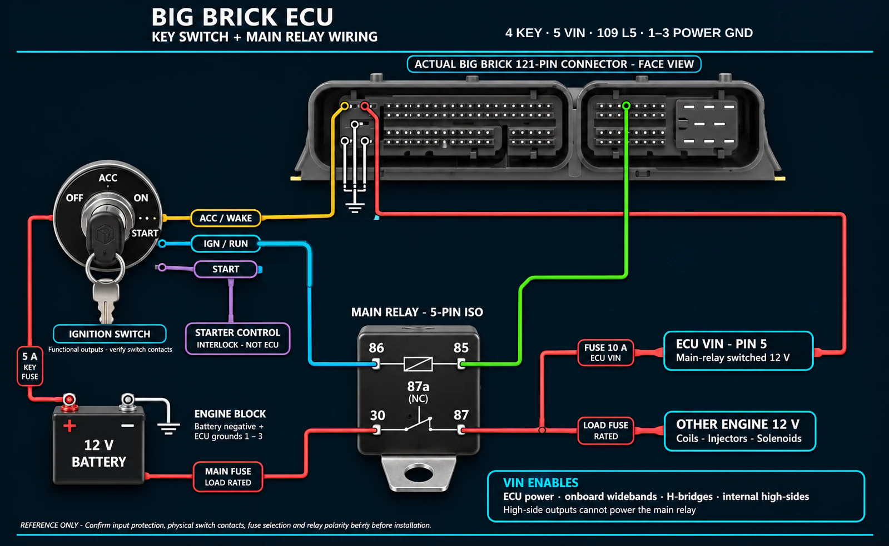
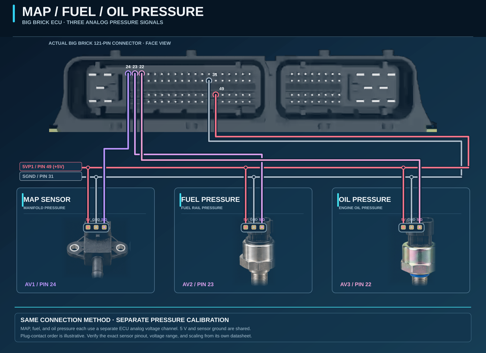
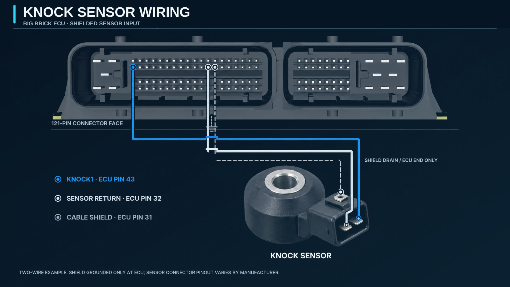
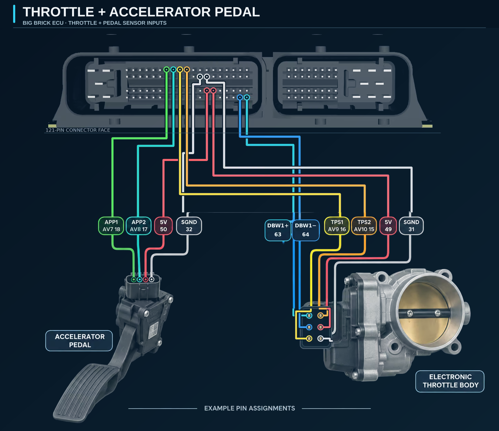
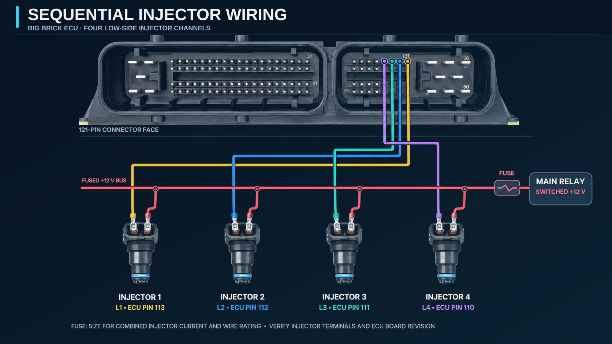
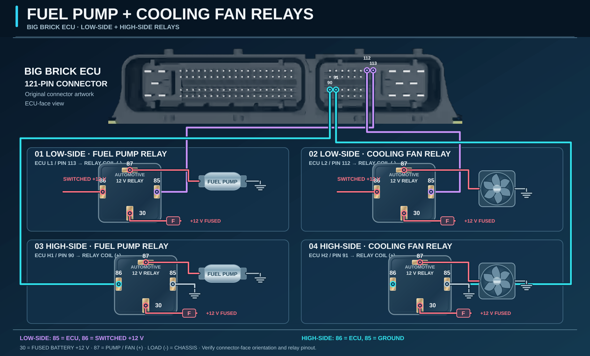
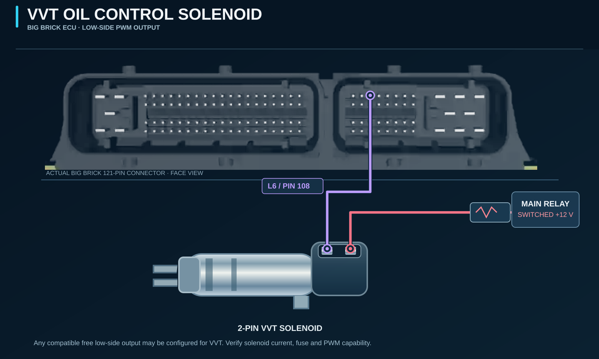
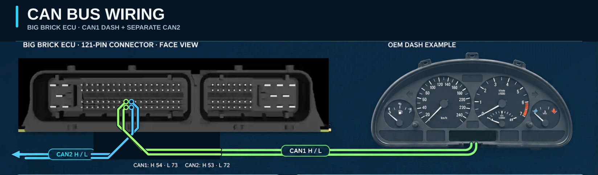
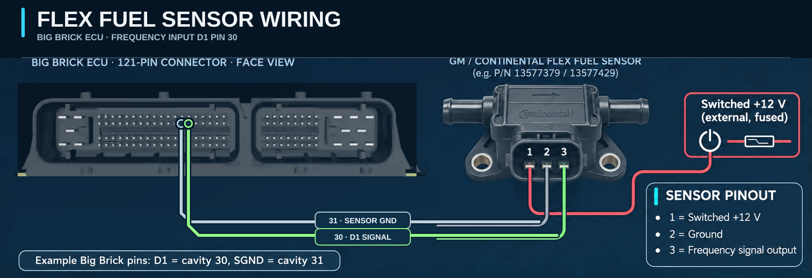
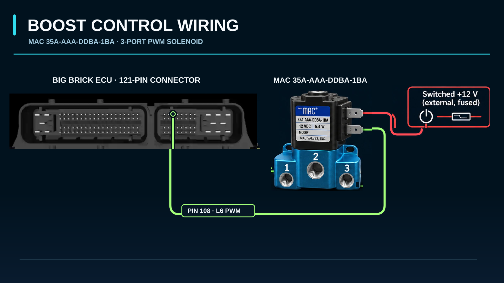

Build your harness.
Start your engine.
A workshop manual that follows the way you actually build: plan the wiring, power the ECU, check sensors, understand the trigger, then prepare for the first start.
Jump to a section
Big Brick input and output types — electrical reference
5 V hardware pull-ups (Big Brick design information). Detect transitions, including ground-switching Hall, frequency and switch signals. No pull-up enable setting; firmware selects function and decoding.
Two-wire AC sensor interface. Each pair has its own + and − terminals; VR− is not a power ground.
Each measures an input voltage. MAP, TPS and linear pressure functions are assigned in firmware, along with the sensor calibration.
Voltage-divider input with hardware bias resistor. Each needs the sensor's resistance curve and the board's bias resistor value.
Switch the load's ground side. The output can be assigned a supported role; its channel number does not permanently indicate a particular cylinder or solenoid.
Switch the supply side of a load instead. They are electrically different from low-side outputs.
The 5 V COIL signals are for suitable smart coils or driver inputs. Optional igniter channels are distinct high-current ignition interfaces; do not treat a logic signal as a coil power connection.
Each is a reversible two-wire motor driver. A supported four-wire bipolar stepper requires two motor bridges; the bridge numbers are physical labels, not permanent accessory names.
Dedicated measurement or bus interfaces. They are not substitutes for general analog-voltage channels.
Understand the diagrams in 30 seconds
Big Brick ECU pin locations shown are correct for the labeled functions. What is optional is which compatible ECU channel you decide to use. A MAP sensor does not need a particular AV pin; injector 1 does not need a particular low-side pin.
For example, AV1 really is pin 24, L1 is pin 113 and DBW1+ is pin 63 in our published Big Brick pinout. These are real connections, not invented positions. You can choose another available channel of the same appropriate electrical type.
External pedals, throttle bodies, coils and sensors vary. Look up the manufacturer's contact assignments for your exact part, then connect its matching functions to your selected ECU channels. Device-side contacts in most drawings are illustrative.
Assign your selected compatible channels in TunerStudio, use each signal/output only once, and verify the final pin allocation. Specialized circuits such as wideband, knock, VR, CAN and motor drivers must keep their intended electrical function.
Expand any drawing for the full wiring example. Confirm your ECU revision and the actual external device pinout before completing a harness. Bosch LSU 4.9 has its own specifically numbered connector reference below.
How to read the wiring illustrations
There are two different sides to each image. On the Big Brick side, the numbered ECU cavities are the actual physical locations of the labeled functions in the published 121-pin pinout. On the device side, the plug-contact positions are generally illustrative because a pedal, throttle body, sensor or coil's terminal arrangement depends on its exact make and model. The example choice of ECU channel is optional; the ECU cavity's actual pin number is not. The Bosch LSU 4.9 reference is specifically numbered on the sensor side as well.
Match electrical functions, not the pictured contact order. Identify the exact external device's terminals, signal range, supply and ground requirements, and connector orientation from its manufacturer's data. Choose a suitable available ECU channel and find that channel's correct cavity in the current Big Brick pinout; the image's highlighted cavity remains correct for the channel illustrated, even if your own channel choice differs.
Each illustration stands on its own. A channel appearing in multiple diagrams is not simultaneously free for all of those jobs. Allocate every required input and output to a suitable unoccupied channel and configure your choices in TunerStudio; share sensor power/returns only within their rated limits. Keep a documented pin-allocation sheet so you know exactly what you chose.
There is no dedicated MAP input or mandatory injector-1 pin. Big Brick has 11 analog-voltage inputs (AV1–AV11), each usable for an appropriately compatible MAP, TPS, pedal, fuel-pressure, oil-pressure or other analog-voltage sensor function. It has 16 general-purpose low-side outputs (L1–L16), any suitable free one of which may be assigned to a supported injector function or other compatible low-side load; the software supports up to 12 injectors. The diagrams select specific real pins only to make the examples easy to follow.
Pick within the right hardware category: AT1–AT4 are analog-temperature inputs, D1–D6 are digital inputs, COIL1–12 are the 5 V ignition-output group, H1–H4 are high-side outputs, and DBW1/DBW2 are motor H-bridges. Knock and wideband are dedicated measurement circuits; CAN and VR use dedicated physical pairs. These categories are not electrically interchangeable.
Both H-bridges are configurable resources. DBW1 (pins 63/64) and DBW2 (pins 45/44) are fixed physical motor-driver pairs, but either can serve an appropriate firmware-supported motor function such as an electronic throttle or compatible electronic wastegate. A supported four-wire bipolar idle stepper uses both H-bridges, leaving neither free for another motor. Always confirm firmware and actuator compatibility.
Original connector photographs are separate references. The real Big Brick connector image is not AI-generated, but pin placement and connector-face orientation must still be checked against the final design.
Understand the vehicle. Decide what every wire does. Get the ECU online.
Plan it before you build it.
A standalone ECU does not need to be intimidating. The best harness starts with a complete map of what the vehicle needs today—and enough space for the features you may add tomorrow.
First identify the vehicle's existing main relay and key-switch behavior, ECU power and grounds, sensor types, throttle arrangement, ignition and injection hardware, and the vehicle electronics that must be retained. Use verified vehicle wiring information and exact device part numbers; do not infer terminal functions from illustrations or wire colors.
Record the ECU cavity, chosen channel, device and terminal, connector-view orientation, power and return requirements, protection and source documentation for each circuit. A channel repeated in two example diagrams does not mean it can drive both loads simultaneously.
Consider connector access, harness branches, strain relief, vibration, heat, abrasion, moisture and routing near moving components. Keep power/engine-load wiring and sensitive signal returns organized.
Every 121-pin connector view must be read from the specified side. Keep an as-built wiring record and arrange independent unpowered inspection and continuity/isolation verification before sensitive electronics are connected or energized.
A spare input might become an oil-pressure sensor, a temperature sensor, a flex-fuel input or a CAN accessory later. Reserve appropriate unused channels and room for future branches. Any unused conductors must remain clearly identified, insulated and securely terminated, never loose or energized.
With a standalone ECU, one future repair often turns into another project: a new sensor, an accessory, a display, then another interesting capability. That flexibility is part of the appeal. Plan for expansion, but keep the initial installation simple.
Important: Incorrect connections can damage electronics and an engine. The hardware, fuel, ignition and other vehicle-critical systems require qualified review; illustrations are functional examples, not a replacement for actual device connector documentation.
Start with the key switch and main relay.
KEY and VIN serve separate purposes. KEY/pin 4 is the Big Brick wake input, VIN/pin 5 receives switched main-relay power, L5/pin 109 is the example low-side output controlling the relay coil, and grounds/pins 1–3 are the power returns. There is no additional analog ignition-state input in this circuit: the key's IGN/RUN feed determines whether the relay coil can energize. The ECU's listed pin numbers are actual cavity identities; the external vehicle switch and relay connector positions must be identified on the vehicle.

Wakes the ECU with its low-current input; main engine loads remain off.
The key's IGN/RUN output supplies +12 V to the main-relay coil, with the ECU-controlled low-side return completing that circuit. The relay contacts supply VIN and the fused engine-load branches. IGN/RUN must remain present during cranking.
Separate momentary starter request. START does not feed the main-relay coil; the relay remains supplied by the IGN/RUN key contact while cranking.
Before moving on: Verify the intended wake/run states and stable ECU supply with a protected, non-running setup. The first goal is reliable ECU power and TunerStudio communication; no unfinished wires should be exposed or energized, and engine-actuating systems remain inhibited until qualified commissioning.
Make the ECU's live readings agree with the engine, before considering fuel or ignition.
Connect and understand your sensors.
With the ECU powering reliably, sensors are the first satisfying check: you can see their actual values in TunerStudio before the engine runs.
What success looks like: sensor values agree with the physical world. Coolant and air temperatures make sense, throttle moves smoothly, and an absolute MAP sensor exposed to ambient air reads approximately local barometric pressure. A different sensor part number may need a different calibration.
MAP, fuel pressure and oil pressure
MAP is a software assignment, not a special physical pin. Any suitable free AV1–AV11 channel can serve MAP, fuel pressure or oil pressure. The diagram chooses MAP → AV1/pin 24, fuel pressure → AV2/pin 23 and oil pressure → AV3/pin 22: those are the correct locations for those named channels, but not the only possible choices. Each sensor still needs the correct power and return and its individual calibration.

Analog voltage inputs measure voltage, not pressure directly. Any of the 11 available AV channels can be assigned to MAP, fuel pressure or oil pressure in TunerStudio. A linear pressure sensor's published calibration gives two voltage/pressure pairs; software converts the voltage to pressure using those points. For instance, 0.5–4.5 V is a common example range, not the calibration of every sensor. The channel is interchangeable; the sensor's actual voltage-to-pressure data is not. rusEFI MAP inputs and linear pressure sensors.
Coolant and intake-air temperature (CLT / IAT)
Coolant and air temperature sensor wiring

Temperature inputs are resistor-measurement circuits. AT1/pin 13, AT2/pin 12, AT3/pin 11 and AT4/pin 10 each have an ECU-side bias resistor, which forms a voltage divider with a resistive thermistor. CLT and IAT can use any unallocated AT channel; their temperature calibration needs the thermistor's resistance-versus-temperature curve and the correct Big Brick bias-resistor value. That resistor value is not listed in the current public pinout, so borrowing an ohm value from Proteus or another rusEFI ECU is not justified. rusEFI temperature calibration.
Bosch LSU 4.9 wideband oxygen sensor — exact pinout
Important exception: This is a specific wiring reference, not a generic sensor example. The Bosch LSU 4.9 six-position connector pin numbering and sensor functions shown in the diagram are correct for the specified LSU 4.9 connector. Connect each of the six numbered sensor terminals to the designated Big Brick wideband connection exactly as shown. Do not substitute other ECU inputs or outputs, swap terminals, or interpret this diagram as an arbitrary connector illustration.
Bosch LSU 4.9 connector wiring

Bosch sensor connector pins: 1 = pump current (IP), 2 = virtual ground (VM), 3 = heater negative (H−), 4 = heater positive (H+), 5 = trim resistor (RT), 6 = Nernst voltage (UN). These assignments match Bosch Motorsport's LSU 4.9 datasheet. The original connector contains the sensor calibration resistor: do not remove, bypass, or rewire it. Each onboard wideband controller requires its own dedicated LSU 4.9 sensor wiring.
Knock sensor
Knock sensor wiring

KNOCK1 is ECU pin 43. In this example the sensor return uses SGND pin 32, and the cable shield connects to SGND pin 31 at the ECU end only; insulate the shield at the sensor end. Verify the actual sensor terminal arrangement.
If a value looks wrong: review the configured input channel, sensor part number, supply and return requirements, then compare the correct datasheet calibration against the displayed reading. Do not change multiple settings at once to hide an unexplained reading.
Connect the throttle body and pedal.
The throttle has a motor pair and two independent position signals. The accelerator pedal similarly uses position-sensor channels, but its actual terminal arrangement depends on the pedal assembly.

Two pedal tracks are two independent measurements. APP1/AV7 pin 18 and APP2/AV8 pin 17 are valid example choices, not mandatory destinations. TunerStudio lets the installer associate two separate analog-voltage channels with the pedal's primary and secondary tracks and calibrate each track's end-point voltages. The tracks can rise together or follow different designed slopes; their expected relationship is used to detect disagreement. The actual terminal order and normal signal curves come from that pedal's documentation. rusEFI redundant pedal inputs.
Early checkpoint: With the engine off and engine-actuating systems safely inhibited, confirm that both pedal tracks and both throttle-position tracks report plausible, consistent changes in TunerStudio. Follow the manufacturer's safety and calibration requirements before any throttle-motor testing.
Alternative: cable throttle with 4-wire idle stepper
A compatible four-wire bipolar idle stepper has two motor windings. Our image correctly shows DBW1 as pins 63/64 and DBW2 as pins 45/44, with one winding per H-bridge. Either bridge can serve either winding in a supported configuration, but both bridges are occupied when controlling the stepper, so neither is simultaneously free for an electronic throttle or wastegate.
Cable throttle / four-wire idle stepper

Verify the valve before wiring: GM-style stepper connector arrangements are not universal. Identify the actual terminal letters and measure the two coil pairs with an ohmmeter: each H-bridge must connect across one complete winding, not across two unrelated wires. Confirm TPS signal, 5 V and sensor ground against the exact TPS connector pinout.
Confirm the ECU understands crank and cam.
First distinguish the electrical output of the actual sensor: an ordinary Hall/optical sensor produces digital high/low transitions for a D input, whereas a passive VR sensor generates a changing differential signal for a VR+/VR− pair. In software, the selected input channel tells rusEFI where the signal arrives; the trigger pattern tells it how those events correspond to crank/cam position. These are different jobs. The sensor's part number, rather than its appearance or number of wires alone, establishes which interface it uses.
Hall / digital sensor
Hall crank/cam wiring (three-wire sensor)

What D1–D6 actually do: The Big Brick hardware design uses 5 V pull-ups on its six digital inputs: D1/pin 30, D2/pin 29, D3/pin 28, D4/pin 27, D5/pin 26 and D6/pin 25. An open-collector/open-drain Hall sensor periodically pulls its signal low; when it releases the signal, the ECU pull-up restores the high state. That is why a ground-switching Hall sensor can work without adding another pull-up or changing any hardware input mode. The sensor still needs its specified power supply and ground, and its output transistor must be rated to sink the installed pull-up current.
What is actually configured in rusEFI: which D input is assigned to crank or cam, which tooth/trigger pattern the engine uses and which signal transition the decoder observes. Those are firmware settings, not an instruction to enable the pull-up. A push-pull Hall output actively drives the signal high and low; a 12 V-powered Hall sensor can output 5 V or ground-switching pulses, but a sensor that actively drives the signal to 12 V must not be presumed safe for a 5 V digital input. The public Big Brick pinout does not yet publish the D-input pull-up resistance or maximum applied input voltage, so these two hardware limits must be documented before any claim of universal Hall compatibility. rusEFI Hall sensor reference.
VR / differential sensor
VR crank/cam wiring (differential sensor)

VR is not another kind of Hall wiring. A passive two-wire VR pickup generates an alternating voltage as teeth move past it, so it does not use the 5 V digital-input pull-up or an external 5 V supply. Big Brick's first differential VR input is VR1+/pin 6 and VR1−/pin 7; the second is VR2+/pin 8 and VR2−/pin 9. The plus and minus wires are the two sensor leads, not supply and ground. Signal polarity affects which waveform transition defines the timing event. The shield is a separate noise-control connection, not a substitute for VR−. rusEFI VR signal behavior.
What each trigger check proves — and what to check next
A changing input LED or event counter tells you the firmware is seeing transitions. A plausible RPM tells you the selected trigger decoder is recognizing a repeating pattern; stable synchronization means the sequence continues matching. The ignition timing reference is a separate angular relationship between that decoded pattern and the real engine, rather than some hidden electrical setup required by a Hall sensor. rusEFI explains these indicators.
Good: the ECU is receiving sensor transitions. If there is no activity, compare sensor supply, ground, signal wiring and the selected ECU input with the hardware pinout. The rusEFI Console triggerinfo command shows input event counters.
Good: rusEFI is recognizing a repeating trigger pattern and calculating speed. Many engines show roughly 150–300 RPM while cranking, but the value depends on the engine and starter. If the number is missing or erratic, inspect the selected pattern, edge settings, crank/cam assignments and the captured tooth pattern.
Good: the pattern continues to match what the ECU expects. In TunerStudio, look at the Triggers gauge category and any synchronization/error indicators; in rusEFI Console, compare triggerinfo output over a capture. If errors rise, use Diagnostics & High Speed Loggers or Console Engine Sniffer to compare the actual signal with the selected trigger.
Good: the ECU's calculated crank position lines up with the real engine. Even with perfect RPM and synchronization, the trigger angle needs a timing-reference check; use rusEFI's engine-specific trigger-offset and timing-light guidance with appropriate professional precautions. This is a one-time verification, not a reason to distrust otherwise healthy sensors.
In short: events → RPM → stable sync → confirmed timing. Passing one test means you have made useful progress, not that you should start over. For a crank-only arrangement, whether a cam signal is required depends on the chosen ignition and injection modes; for example, wasted spark does not require cam phase. rusEFI trigger troubleshooting explains the logger and counters in detail.
Document cylinder mapping, ignition and injection, then review the first-start prerequisites.
Wire the coil type you actually have.
“Smart” and “dumb” describe where the ignition power switch lives. A smart coil contains its own power transistor/igniter and accepts an ECU logic-level command. A conventional dumb coil requires a separate ignition power driver; the Big Brick's optional onboard IGBT bank provides that driver function. The COIL1–12 connectors are 5 V logic outputs, not power-switching replacements for the optional IGBTs. The coil's electrical characteristics, driver compatibility and dwell specifications are part-specific information—not universal settings.
Smart coils
Smart coil wiring

COIL1–12 are 12 independent 5 V ignition-control signals. For example COIL1/pin 94, COIL2/pin 95, COIL3/pin 96 and COIL4/pin 97 are fixed physical pin identities, while which coil/cylinder each signal commands is assigned in rusEFI. The smart coil contains the power-switching circuitry; the 5 V signal itself is not meant to carry its primary current. The coil manufacturer's signal threshold, polarity, operating supply and dwell data define whether that particular smart coil is electrically suitable. rusEFI ignition output differences.
Dumb coils / optional IGBT
Dumb coil / optional IGBT wiring

C1–C8 are the optional IGBT driver connections, not eight extra independently timed ignition channels. C1/pin 119, C2/pin 120, C3/pin 121 and C4/pin 117 are the first four illustrated physical cavities. Installing the optional IGBT drivers allows eight of the existing COIL logic signals to drive the corresponding igniter paths in parallel; the 12 COIL outputs remain available. A dumb coil needs the suitable power-switching driver and cannot be operated as though a 5 V logic signal were a coil power output. Which driver signal serves a particular engine cylinder remains an ECU assignment. Big Brick ignition driver specifications.
Ignition parameters have different meanings: cylinder numbering identifies the physical cylinder, firing order defines the sequence of combustion events, coil output assignment chooses which 5 V/IGBT channel serves that cylinder or paired cylinders, and dwell is the coil-specific charging interval. A correct pinout does not establish the last three values; they come from the actual engine, coil and ECU configuration. rusEFI single, wasted-spark and sequential modes.
Keep cylinder assignments simple.
The numbers L1–L16 identify output hardware, not cylinder numbers. Each is a general-purpose low-side driver, with a manufacturer-stated rating up to 2 A per channel for Big Brick. These outputs can be assigned suitable low-side functions such as a supported high-impedance injector or a relay/solenoid within their electrical and software limits. The four-injector drawing merely selects L1–L4 and associates them with four cylinders. “Injector 1” is the software's cylinder assignment, not an additional fixed physical output. Low-impedance/peak-and-hold requirements are a separate electrical issue; a 2 A limit is not permission to attach any injector impedance. Big Brick output ratings.

Simple example, not a rule: L1/pin 113 → engine cylinder 1, L2/pin 112 → cylinder 2, etc. is convenient, but cylinder 1 could instead be on another compatible free low-side output. Cylinder numbering follows the manufacturer; software cylinder mapping and firing order are separate from the order of the physical ECU pins.
Fuel pump and cooling fan relays: next stage, not the first
The relay diagram shows two mutually alternative types of ECU control. A low-side output is a controlled connection to ground; a high-side output is a controlled connection to supply voltage. Big Brick specifies 16 low-side channels and 4 high-side channels, each rated up to 2 A per channel; these are driver ratings, not general permission for direct high-current fuel-pump or cooling-fan loads. A relay separates its small control-coil circuit from the larger load circuit. The four pictured panels are alternatives, not four circuits that must all be installed. Fuel can remain pressurized after a pump is off, so fuel-system commissioning has distinct safety procedures.
Fuel pump and fan relay examples

Why the pin examples overlap: the relay examples use L1/pin 113 and L2/pin 112, the very same real pins used for injectors in the separate injector drawing. You cannot allocate those channels twice. A relay's assigned output must be a free channel of the correct high-side or low-side electrical type, and the coil current, suppression components, fuse and actual load circuit are determined by the relay's own technical data—not by a generic relay drawing.
From proven sensors to a ready engine.
You do not need VVT, boost control or every accessory finished before the first start. What matters is knowing that the core systems and their assignments are understood and have been checked independently.
Before any first-start commissioning
- Power: stable key-on ECU voltage, predictable main relay, secure grounds and no exposed spare conductors.
- Inputs: correct sensor channels, plausible throttle and MAP readings, credible coolant and intake temperatures; electronic-throttle safety checks completed where fitted.
- Position: selected trigger matches the engine, RPM is plausible, synchronisation remains stable, and the timing reference has been physically verified.
- Engine configuration: actual cylinder numbering and firing order, ignition mode and coil compatibility, injector characteristics and pressure specifications checked against documentation.
- Outputs and protection: an appropriately qualified installer has confirmed output-to-cylinder assignments, fuel and ignition system integrity, protections, and the required safety procedures before enabling engine actuation.
- Calibration: a known, engine-appropriate starting calibration is available; no unverified timing, injector or VE assumptions are being treated as safe defaults.
When the engine does not behave as expected
Start with the trigger input selection, sensor wiring documentation and event counters in triggerinfo. If inputs have activity but RPM never becomes stable, compare the captured trigger waveform with the expected pattern.
Review the selected crank/cam pattern and sensor type; use trigger-error counters and the Engine Sniffer or high-speed logger. This is a decoding question, not evidence that the sensor or ECU is defective.
Shift attention to confirmed engine timing, physical cylinder numbering, assigned ignition/injector outputs, valid fuel-system readings, tune settings and mechanical condition. RPM alone cannot rule those out.
Review the recorded sensor data, engine temperature, fuel-system specification, starting calibration and sync history. A wideband can read apparently lean during a misfire because unburned oxygen reaches it. Do not blindly enlarge the VE table or alter the injector-size setting to chase one uncertain reading.
The method: change one understood variable at a time, preserve a matching tune and log, and fix the cause instead of working around it. A qualified installer should oversee hazardous output testing, pressurized fuel work, ignition checks and any first engine start.
The extras are here when you need them—not in the middle of getting the engine running.
Add vehicle integration and optional control.
These three examples use actual component types and Big Brick channel names. Read the labels as functional wiring examples; always verify the physical terminal orientations and ECU board revision before building the harness.
VVT / oil-control solenoid
VVT solenoid wiring

VVT is a function assigned to an available low-side driver. The picture calls it L6/pin 108 because that is a real Big Brick output. L6 does not have special “VVT-only” electronics: another unallocated L channel with the relevant electrical rating can be given that role in the software. The oil-control solenoid remains a particular electrical load with its own current, pulse-frequency and port/actuator characteristics; selecting the channel does not define those device-specific properties.
CAN1 / CAN2 and OEM dashboard
Both CAN buses have onboard termination options. CAN1 and CAN2 are independent differential CAN-H/CAN-L pairs. Each bus has a 120 Ω onboard termination plus a second, switch-selectable 120 Ω termination. The resistors connect across CAN-H and CAN-L. The OEM dashboard in this example connects only to CAN1; CAN2 remains active internally for ECU communication with the onboard wideband controllers and ESP32, even without an external CAN2 device.
Choose termination for the actual bus: With no external CAN2 wiring, enable both onboard 120 Ω terminations for the internal CAN2 network. If a CAN bus extends into a vehicle harness and the far end already has a 120 Ω termination, leave the second onboard termination disabled; the bus then has two 120 Ω terminators in total. The second onboard resistor is also available if an external CAN1 device has no termination, but on a longer external bus the preferred location for that second resistor is at the far physical end, not beside the ECU. Avoid extra terminators and verify the switch settings and external device termination for your installation.
CAN1 and CAN2 wiring

GM / Continental flex-fuel sensor
Flex-fuel information is carried by pulse frequency. The illustrated GM/Continental-style sensor uses an external supply specified for its part number and a separate digital frequency output. Its ground-switching frequency signal is a suitable input type for a D-channel with a 5 V pull-up, while its switched 12 V power input is not a digital signal. The software assigns the chosen D input under Sensors → Misc sensors → Flex fuel sensor. rusEFI documents an expected pull-up of roughly 1–5 kΩ for this sensor family; because Big Brick's pull-up resistance is not publicly specified, the resistor value cannot yet be asserted to meet that range. rusEFI flex-fuel signal reference.
Flex-fuel sensor wiring

MAC three-port PWM boost solenoid
The MAC valve diagram represents a two-terminal electromagnetic solenoid driven by a low-side PWM channel. In the example, L6/pin 108 is the correct ECU cavity for that low-side output, not a reserved boost-control pin. PWM duty cycle changes how long the driver is active during each period; the valve response depends on the exact solenoid's electrical and pneumatic specifications. A wiring diagram cannot determine the manufacturer's pressure-port routing or a safe control calibration for a particular engine, so those are separate, device-specific facts.
Boost solenoid wiring

External electronic wastegate (DBW2)
DBW2+ is pin 45 and DBW2− is pin 44 in the real Big Brick pinout. The picture uses that H-bridge for an example electronic wastegate, with sensor 5 V/pin 49, AV1/pin 24 feedback and SGND/pin 31. DBW2 is not a wastegate-only driver: an available compatible H-bridge may serve another supported motor-control function, and position feedback can use a different compatible free AV input. Direct actuator compatibility and safe control are not yet validated; confirm the actual device terminals, electrical ratings, firmware and failsafe requirements.

Connect buttons, clutch or brake switches.
Use the input type that matches the switch’s actual electrical behavior.
Buttons, clutch switches and brake switches
For a ground-switching contact, D1–D6 already supply the high state. With the switch open, the ECU's 5 V pull-up holds its digital input high; with the contact closed to sensor ground, the line becomes low. The assigned function and desired active polarity are software decisions. By contrast, a switch that actively applies battery voltage is an entirely different electrical source and must use an input explicitly rated for that voltage.
Switch and button wiring

Do not confuse “AV” with “12 V-tolerant”. D inputs are described here as 5 V-pulled-up logic inputs, and AT inputs are biased for thermistors; neither should be assumed to accept vehicle battery voltage. Although the diagrams show a battery-voltage-switched example on AV1/pin 24, the published Big Brick pinout does not state its maximum applied voltage. This example cannot be advertised as an approved direct 12 V connection until the board's electrical limits are published. For a vehicle switch, the actual output voltage and whether it switches to ground are the determining facts—not the shape of the switch.
These are example layouts, not a substitute for the final hardware schematic or the specific engine's sensor and actuator datasheets. Confirm terminal orientation and all functions before connecting a live engine.